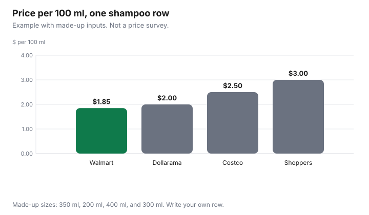

Personal Care · Canada
Toiletries Price Check: Costco vs Walmart vs Shoppers vs Dollarama, by Price per Use
The sticker on a toiletry is the price of a bottle, not the price of a wash. A 200 ml bottle at a low price can cost more per wash than a larger bottle with a higher sticker, and a club-size bottle can cost more than either one if half of it is thrown out. This page is the method for a 12-item basket at Costco, Walmart, Shoppers Drug Mart, and Dollarama. It is not a shelf survey. Costco.ca, Walmart.ca, and the Dollarama homepage were cited as of 29 Sep 2026, and no matched toiletry price was recorded from them. Shoppers Drug Mart returned an access-denied page, so no Shoppers price was recorded either. The filled row below is an example with made-up inputs. Offer types are disclosed. This is not a ranking of stores.
Key takeaways
- Price per 100 ml is the price divided by the millilitres, times 100. Price per use divides by the uses you will finish, not by the uses printed on a bottle you will throw out.
- The basket is 12 product types, priced the same day, with the size written down. A blank cell is honest. A different product is not a substitute for a missing one.
- No matched shelf price was recorded on 29 Sep 2026. The shampoo bars are an example with made-up inputs.
- Points, a gift-card discount, and a portal rebate change the answer only after you convert them to dollars you will actually receive.
- A membership fee belongs in the math only if you would not hold the membership without this basket. That fee is covered on the household Costco guide, not restated here.
Why unit price per ml or per use beats sticker price
Two bottles are the same comparison only when they do the same job. Shampoo against shampoo can be priced per 100 ml.
A facial serum against a body wash cannot, because you do not use them in the same amounts. When the label states an amount per use, price per use is the better column: it is the price divided by the number of those uses you will take before the product is gone or discarded. The unit-price guide is the grocery version of this division, in kilograms and litres. The arithmetic here is the same. The aisle is not.
Write the formula down before you are standing in the aisle. Price per 100 ml equals price divided by millilitres, times 100. A made-up 400 ml bottle at $9.99 is $2.50 per 100 ml, because 9.99 divided by 400 is 0.024975, and 0.024975 times 100 is 2.4975, which rounds to $2.50. If that label said 5 ml a wash, the bottle holds 80 washes and the price per wash is about $0.12. Both results are an example with made-up inputs. They are here so the division is visible. They are not a Costco price.
Method: a basket of 12 toiletries priced across retailers
Use one list for the household, not a different list in each store. These 12 types cover a typical bathroom without naming a brand: shampoo, conditioner, body wash, bar soap, toothpaste, deodorant, hand lotion, facial cleanser, facial moisturiser, sunscreen, a shave cream or gel, and menstrual pads or tampons if the household buys them. If you do not buy one type, drop that row. Do not add a 13th type in one store only and then declare a winner.
On one day, record the date, whether you are in a stated store or on that retailer’s site, the size in ml or grams, and the price you would pay. Leave a cell blank when the store does not sell that type in a size you would use. Do not copy a travel bottle into a family-size row. Sunscreen has its own label rules on the sunscreen guide. A facial moisturiser is not that product unless the bottle shows an SPF you are willing to use as the sunscreen step. The household comparison is paper and cleaner, not this basket.
Costco is only in the basket if you can shop there. If you would not pay for a membership except to buy these 12 items, the fee has to be spread across what you will buy before the renewal. If you already hold a membership for groceries, do not add the fee again to shampoo. The dollar amount of the fee is on the Costco household guide. It is not repeated here.
Where each retailer usually wins
This section cannot say who usually wins, because no matched prices were collected. What it can say is how to read a win after you fill the sheet.
The winner on a row is the lowest price per 100 ml, or per use, after two subtractions: dollars of points or rebates you will actually receive, and millilitres you expect to discard. A store can win one row and lose the next. A basket total is the sum of the winning cells you will buy, not a slogan about a banner.
Test these patterns with your own numbers. A large size wins only when you finish it. A small bottle can have the lowest sticker and the highest price per 100 ml. A drugstore row can win in a week when you redeem points and lose the next week when you do not. A dollar-store size can win when you only need the small amount and the per-ml math still beats the larger bottles. None of those sentences is a finding from 29 Sep 2026. They are the questions the blank cells are for. The chart uses one made-up shampoo so the four bars have heights.
| Retailer | Size | Price | Per 100 ml |
|---|---|---|---|
| Costco, example | 400 ml | $9.99 | $2.50 |
| Walmart, example | 350 ml | $6.48 | $1.85 |
| Shoppers, example | 300 ml | $8.99 | $3.00 |
| Dollarama, example | 200 ml | $4.00 | $2.00 |
| Your Costco | |||
| Your Walmart | |||
| Your Shoppers | |||
| Your Dollarama |
Points and sale cycles that change the answer
A point is not a discount until you know what the program pays when you redeem it. Shoppers Drug Mart purchases can earn PC Optimum points.
The earn rate and the redemption value change, and this guide does not cite either number. Use the PC Optimum guide for the rule that applies on the day you shop, subtract only the dollars you will redeem, and then divide. Points you let expire are not a discount. A bonus event you miss is not a discount.
The example with made-up inputs values 1,000 points at $1, which is not a PC Optimum rate. Two thousand points would be $2 off the made-up $8.99 Shoppers bottle, leaving $6.99. Divided by 300 ml, that is $2.33 per 100 ml. It still loses to the made-up Walmart row at $1.85. Your points may reverse that. They may not. A flyer price is a date, not a personality of the store. The Flipp guide is how to read a household flyer. Write the end date of the offer on the row.
A discounted retailer gift card is an offer type, not a secret unit price. If you buy $100 of store credit for $95, the 5 percent is a made-up illustration of the arithmetic, not a live offer. Spread the dollars you saved across the purchases you will make with that card before you claim it on one bottle. A cash-back portal is the same kind of adjustment: record the rate the portal shows that day, after any category it excludes, and ignore a rate you saw last month.
| Offer | What to write down | Worked effect on the example Shoppers bottle |
|---|---|---|
| Points you will redeem | Dollar value from the program’s own rule, not a guess | Made-up $2 off $8.99 leaves $6.99, or $2.33 per 100 ml on 300 ml |
| Flyer or bonus week | End date, and the price only if you will shop before it | Leave this cell for the week you shop |
| Gift card bought at a discount | Dollars saved, spread over what the card will buy | Do not assign the whole discount to one bottle |
| Cash-back portal | The rate shown today, after exclusions | Record yours before you divide |
Bulk buying vs shelf life and storage
The denominator is what you will use. If a package prints an expiry date or a period-after-opening mark, that printed limit is the one you plan against.
This guide does not cite a regulation that sets a number of months for an opened shampoo, so it does not invent one. Heat, a shared bathroom, and a household that travels can make a club size the expensive option. Millilitres still in the bottle after you stop using it are a cost.
Redo the example. The made-up 400 ml bottle at $9.99 is $2.50 per 100 ml only if you use all 400 ml. If you use 200 ml and discard the rest, the price of what you used is $9.99 for 200 ml, or $5.00 per 100 ml, which loses to every other made-up row in the table. That is the bulk test. Storage is the same test in a different room: a bottle kept in a hot car or a damp shower is not the bottle the price assumed.
A printable price-book template
The blank rows are the template. Print this page or copy the columns into a note: date, place, product type, size, price, price per 100 ml or per use, dollars of points or rebates you will receive, and millilitres you expect to discard.
One row per retailer. Fill it the day you shop, not from memory a week later. The drugstore routine guide is what to do with the cleanser, moisturiser, and sunscreen rows after you know the price. It is not a second price check.

Sources
- Costco.ca, Walmart.ca, and Dollarama.com (en-CA homepage) were cited as of 29 Sep 2026. No matched toiletry price, size, or unit price was recorded from those pages.
- Shoppers Drug Mart’s site returned an access-denied page on 29 Sep 2026, so no Shoppers price was recorded.
- The shampoo prices, the 5 ml wash, the $1 per 1,000 points, and the 5 percent gift-card sketch are examples with made-up inputs.
Frequently asked questions
Where are toiletries cheapest in Canada?
This page does not crown a store. Costco.ca, Walmart.ca, and Dollarama’s homepage were cited as of 29 Sep 2026, and no matched toiletry price was recorded. Shoppers Drug Mart returned an access-denied page, so no Shoppers price was recorded either. The cheapest row is the one with the lowest price per 100 ml, or per use, after you subtract only the points you will redeem and after you ignore millilitres you will throw out.
How do I calculate price per use?
Divide the price you pay by the number of uses you will actually finish. A use is the amount the label tells you to use, not the whole bottle. In the example with made-up inputs, a 400 ml bottle at $9.99 and a made-up 5 ml wash is 80 washes, or about $0.12 a wash. Replace both numbers with the bottle in your hand.
Is Dollarama cheaper for toiletries?
A lower sticker is not a lower price per 100 ml. In the example with made-up inputs, a $4.00 bottle of 200 ml is $2.00 per 100 ml, which beats the made-up $3.00 Shoppers row and loses to the made-up $1.85 Walmart row. Those dollars are not a Dollarama shelf price. Fill the blank row.
Do PC Optimum events make Shoppers cheaper?
Only after you turn the points into dollars with the program’s own redemption rule and subtract that amount before you divide. The example uses a made-up value of $1 per 1,000 points, which is not a PC Optimum rate. The PC Optimum guide is where that rule lives. A bonus week you do not redeem does not change the price per 100 ml.
Is bulk buying worth it for toiletries?
Only for the amount you finish before the date or the symbol printed on the package. This guide does not cite a rule for how many months an opened bottle lasts, so it does not give you one. If you will discard half of a club-size bottle, put only the half you will use in the denominator. A smaller bottle can win once waste is in the math.
Researched and drafted with AI assistance and fact-checked against official Canadian sources. How we create content.
Disclosure: Discounted retailer gift cards and cash-back portal offers are offer types. Saving Optimizer may earn a commission if a partner link is added later. No partnership is claimed with Costco, Walmart, Shoppers Drug Mart, Dollarama, or any portal. Education only. This page does not name a best shampoo, deodorant, or store.